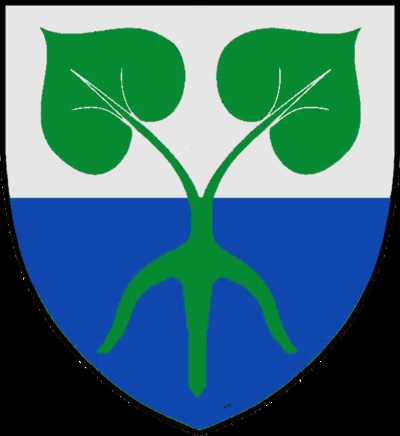

Antavla
7984420 Frellav Håkansson

Far:
Håkan Christiernson Frille (1380? - 1439?)
Mor:
Mårtensdotter Djäkn (- >1442)
Född:
omkring 1400 Danmark.
[1]
Död:
efter 1457 Danmark.
[1]
Barn med ?
Barn:
Eggert Frellavsen Frille (1420? - >1501)
Personhistoria
Årtal
Ålder
Händelse
1400?
Födelse omkring 1400 Danmark
[1]
1420?
Sonen
3992210 Eggert Frellavsen Frille
föds omkring 1420 Danmark
[1]
1435?
Barnbarnet
1996105 Birgitte Eggertsdatter Frille
föds omkring 1435
1439?
Fadern
15968840 Håkan Christiernson Frille
dör omkring 1439 Åbo, Finland
[2]
>1442
Modern
15968841 Mårtensdotter Djäkn
dör efter 1442 Finland
[2]
>1457
Död efter 1457 Danmark
[1]
Källor
[1]
Verner Moeskjaer
[2]
Erkki Tikkanen